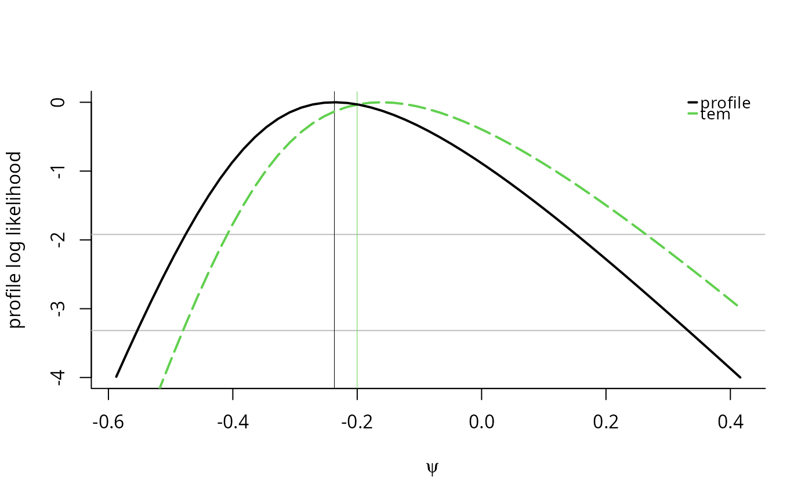
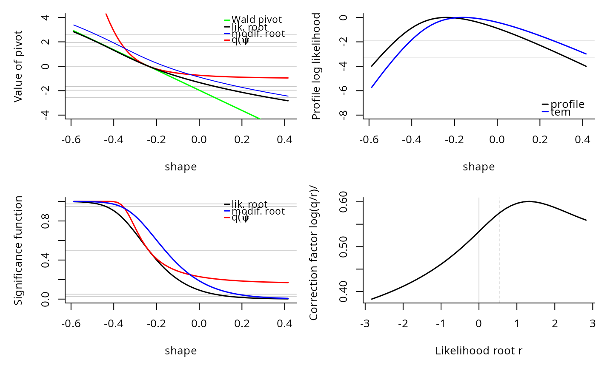

The function gpd.tem provides a tangent exponential model (TEM) approximation
for higher order likelihood inference for a scalar parameter for the generalized Pareto distribution. Options include
scale and shape parameters as well as value-at-risk (also referred to as quantiles, or return levels)
and expected shortfall. The function attempts to find good values for psi that will
cover the range of options, but the fit may fail and return an error. In such cases, the user can try to find good
grid of starting values and provide them to the routine.
Usage
gpd.tem(
dat,
param = c("scale", "shape", "quant", "VaR", "ES", "Nmean", "Nquant"),
psi = NULL,
m = NULL,
threshold = 0,
n.psi = 50,
N = NULL,
p = NULL,
q = NULL,
plot = FALSE,
correction = TRUE
)Arguments
- dat
sample vector for the GP distribution
- param
parameter over which to profile
- psi
scalar or ordered vector of values for the interest parameter. If
NULL(default), a grid of values centered at the MLE is selected. Ifpsiis of length 2 andn.psi>2, it is assumed to be the minimal and maximal values at which to evaluate the profile log likelihood.- m
number of observations of interest for return levels. See Details. Required only for
param = 'VaR'orparam = 'ES'.- threshold
threshold value corresponding to the lower bound of the support or the location parameter of the generalized Pareto distribution.
- n.psi
number of values of
psiat which the likelihood is computed, ifpsiis not supplied (NULL). Odd values are more prone to give rise to numerical instabilities near the MLE- N
size of block over which to take maxima. Required only for
argsNmeanandNquant.- p
tail probability, equivalent to \(1/m\). Required only for
argsquant.- q
level of quantile for N-block maxima. Required only for
argsNquant.- plot
logical indicating whether
plot.frshould be called upon exit- correction
logical indicating whether spline.corr should be called.
Value
an invisible object of class fr (see tem) with elements
normal: maximum likelihood estimate and standard error of the interest parameter \(psi\)par.hat: maximum likelihood estimatespar.hat.se: standard errors of maximum likelihood estimatesth.rest: estimated maximum profile likelihood at (\(psi\), \(\hat{\lambda}\))r: values of likelihood root corresponding to \(\psi\)psi: vector of interest parameterq: vector of likelihood modificationsrstar: modified likelihood root vectorrstar.old: uncorrected modified likelihood root vectorparam: parameter
Details
As of version 1.11, this function is a wrapper around gpd.pll.
The interpretation for m is as follows: if there are on average \(m_y\) observations per year above the threshold, then \(m = Tm_y\) corresponds to \(T\)-year return level.
Examples
set.seed(123)
dat <- evd::rgpd(n = 40, scale = 1, shape = -0.1)
#with plots
m1 <- gpd.tem(param = 'shape', n.psi = 50, dat = dat, plot = TRUE)


if (FALSE) {
m2 <- gpd.tem(param = 'scale', n.psi = 50, dat = dat)
m3 <- gpd.tem(param = 'VaR', n.psi = 50, dat = dat, m = 100)
#Providing psi
psi <- c(seq(2, 5, length = 15), seq(5, 35, length = 45))
m4 <- gpd.tem(param = 'ES', dat = dat, m = 100, psi = psi, correction = FALSE)
mev:::plot.fr(m4, which = c(2, 4))
plot(fr4 <- spline.corr(m4))
confint(m1)
confint(m4, parm = 2, warn = FALSE)
m5 <- gpd.tem(param = 'Nmean', dat = dat, N = 100, psi = psi, correction = FALSE)
m6 <- gpd.tem(param = 'Nquant', dat = dat, N = 100, q = 0.7, correction = FALSE)
}